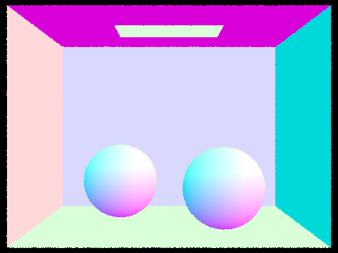
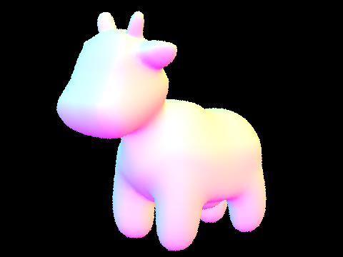
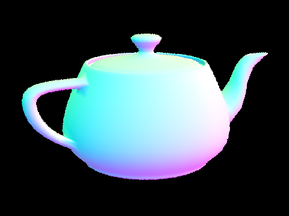
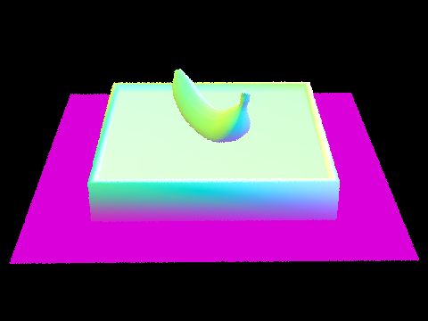
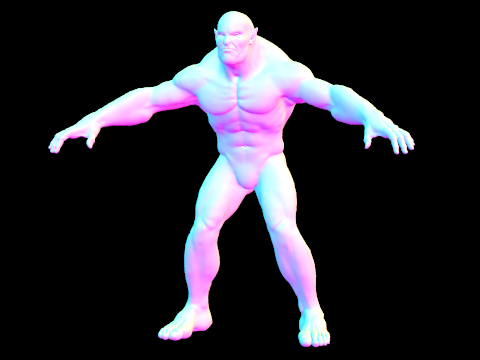
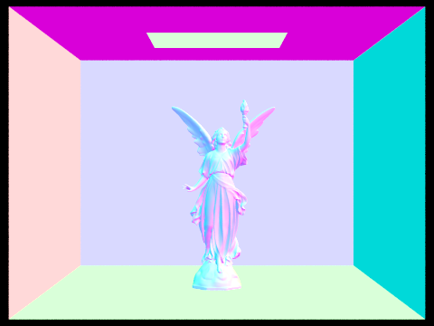
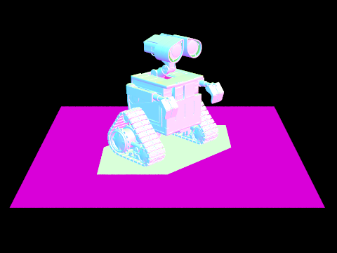

CS184/284A Spring 2025 Homework 3 Write-Up
Link to webpage: https://cal-cs184-student.github.io/hw-webpages-ryan_a/ Link to GitHub repository: https://github.com/cal-cs184-student/sp25-hw3-ryana_hw3

Overview
Give a high-level overview of what you implemented in this homework. Think about what you've built as a whole. Share your thoughts on what interesting things you've learned from completing the homework.Part 1: Ray Generation and Scene Intersection
The first step in ray tracing is to first generate the rays that come out of the camera. For each pixel, I generate a fixed number of rays (given by the -s parameter). For each ray, I first sample a random x,y position inside that pixel using a uniform random sampler, then scale these coordinates down to normalized image coordinates (0 to 1), and pass them to my camera->generate_ray function.
This function converts the given coordinates into a direction for the new ray, then converts this direction from the camera’s local space to world coordinates using the camera’s transformation matrix. This is the direction for the new ray, and the rays origin is simply set at the camera’s world space position. I also set the ray’s min_t and max_t to the camera’s clipping distances. Now, we want to know what each of these rays is going to hit, which requires ray intersection functions for each primitive in the scene (triangles and spheres).
For ray-triangle intersections, I used the Moller-Trumbore algorithm given in discussion, which allows me to efficiently calculate the intersection time as well as the barycentric coordinates of the hit location. After this, I check that the intersection time is valid (within the ray’s min_t and max_t), and also that the barycentric coordinates are valid so we know that the hit location is actually inside the triangle. If these are both true, I fill in the intersection struct to contain the needed information about the hit, like the time, surface normal, and the primitive it hit. For the normal vector, I use the barycentric coordinates to interpolate the triangle’s vertex normals, making sure to normalize the result as it could no longer be normalized after interpolation. I also reduce the ray’s max_t to the time of the intersection so that it can no longer intersect with primitives behind this one.
My ray-sphere intersection function uses a quadratic equation to solve for the times of intersection. After first checking if this equation has any solutions (using the quadratic equation), I again check that the times are within the ray’s valid window. If so, I fill in the intersection struct and update the ray’s max_t similarly to before. With this done, my renderer can now draw simple scenes with normal shading. The images below are rendered at 360p with 1 sample per pixel.
|  |  |
|  |  |
Part 2: Bounding Volume Hierarchy
Though the scenes above are fairly simple - only having a few thousand triangles at most - they were still quite slow to render, as each ray had to perform an intersection test on every primitive in the scene in linear O(N) time. A much more efficient way to render is to organize primitives into bounding boxes such that a ray only needs to perform intersection tests with the primitives in the boxes that it intersects. By organizing these bounding boxes into a binary search tree, we can reduce the time complexity of the intersection testing to O(log(N)), a massive improvement when we have many triangles.
My implementation generates the tree by recursively splitting groups of primitives in half until it reaches a small enough number of primitives per box. I always split along the longest axis of the total bounding box of the primitives to hopefully get the greatest reduction in box surface area. As for the splitting point, I originally went with the average of the primitive’s centroids along the splitting axis. I then sorted the primitives by swapping only the ones that needed to be swapped in a QuickSort like algorithm. While this implementation worked, I found this would sometimes result in heavily one sided trees, especially in the Cornell Box scenes, where the large outside box would stay intertwined with the model in the middle to quite some depth. Thus, I decided to split at the median instead to guarantee an evenly sided tree. To be able to find the median I first have to completely sort the primitives, for which I just used std::sort() to make my life easier. I then split in the middle of this now sorted list of primitives, recursively calling the function on both halves of the list.
With the BVH working I could now render much more complicated scenes in a fraction of the time, and could significantly increase the number of rays per pixel to get smoother results. Some complicated models rendered at 360p with 64 samples per pixel are shown below.
|  | |
|  |  |
For a quantitative look at the performance increase, when rendering the cow model (shown in part 1) at 480x360p with 1 sample per pixel, my renderer took 25.17s with no BVH acceleration and only 0.08s with the BVH. This huge performance increase is helped by the fact that the cow model can be divided quite well into bounding boxes due to its regular geometry. However, for simpler models like the Cornell Box spheres model (also shown in part 1), the BVH acceleration only improved the time from 4.43s to 3.54s when rendering both at 360p with 64 samples per pixel. This shows that for very simple geometry, as well as for models that cannot be divided up nicely like the large triangles of the Cornell Box, the BVH’s performance boost is less significant.
Part 3: Direct Illumination
Part 4: Global Illumination
Part 5: Adaptive Sampling
(Optional) Part 6: Extra Credit Opportunities
Additional Notes (please remove)
- You can also add code if you'd like as so:
code code code - If you'd like to add math equations,
- You can write inline equations like so: \( a^2 + b^2 = c^2 \)
- You can write display equations like so: \[ a^2 + b^2 = c^2 \]